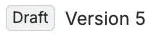
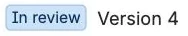
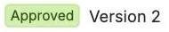

Every document is in one of four states
A page starts in Draft, and anyone who can view it can submit it for review.
How a document moves between states
How it works: It becomes Approved once enough approvers have signed, and an approver can send it back to Draft while it's in review. An approved document returns to Draft if a new version is published or an approver or the page owner resets it, and it moves to Expired if its review date passes. An expired document can't go straight back to Approved, because it has to be submitted and signed again.
What you'll see: The Document control panel, opened from under the page title. It shows a state label (Draft, In review, Approved or Expired), the page version, signatures so far and only the buttons this person may use.
Why it matters to an auditor or owner: A document's state is a recorded fact with a defined route to it. The panel and the server apply the same rules, so a crafted request gets the same answer as the button.

Anyone who can view the page can submit it.
Listed approvers sign it or send it back.
Editing is limited by default. A new version returns it to Draft.- ExpiredThe review date passed. It has to be submitted and signed again.